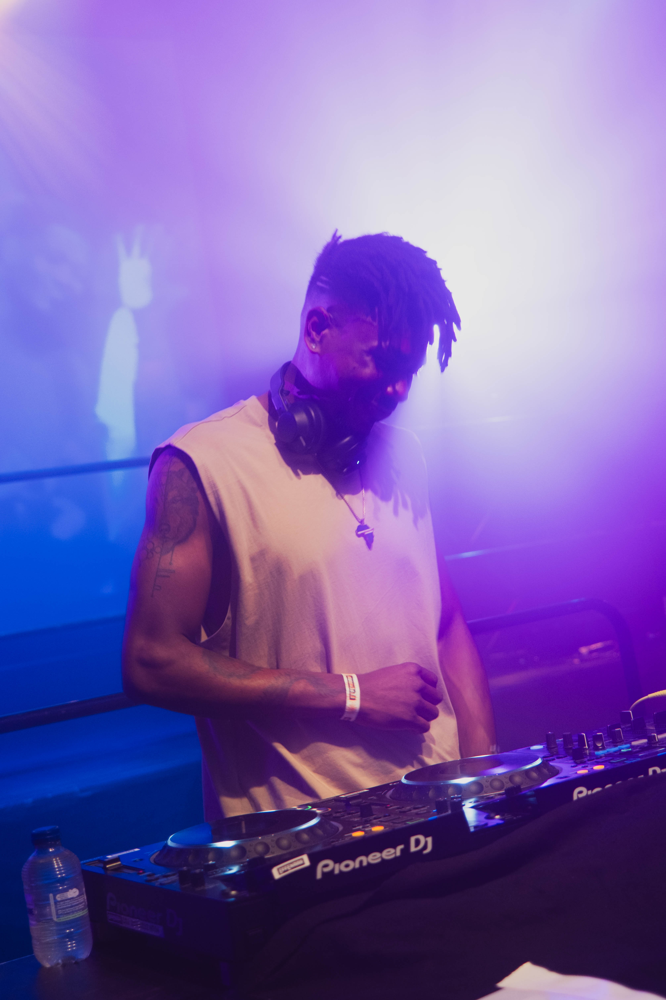
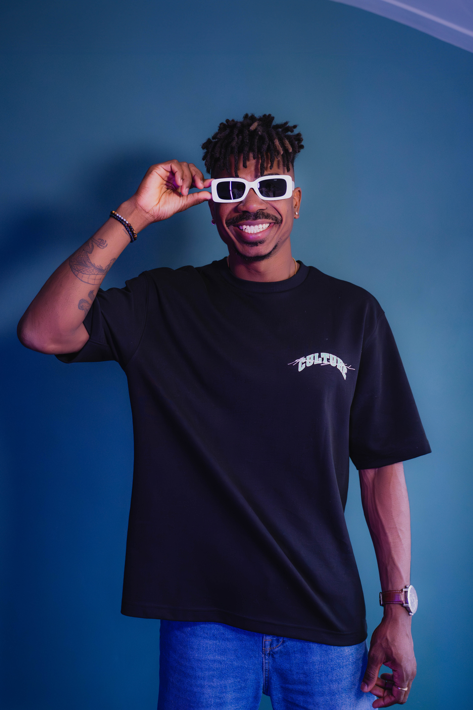
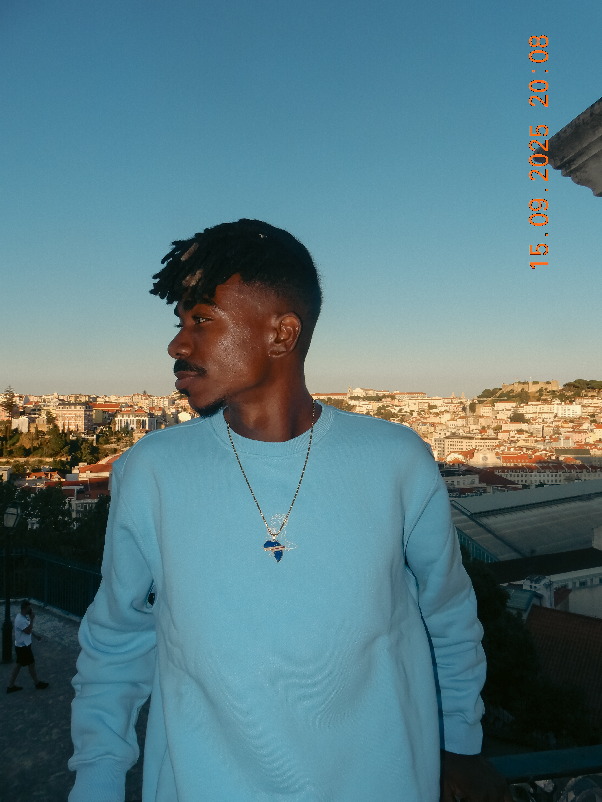

GALLERY




From Santo Antão, Cabo Verde, to the dance floors of the Netherlands. MakY Moreira is a DJ on a mission to spread joy, blending Afrohouse, Afro and Amapiano into sets full of warmth and rhythm.
Every set is a celebration. I bring the warmth, you bring the energy.


Clubs, parties and events. Let's spread some joy.
Get in touch@its_dj_maky